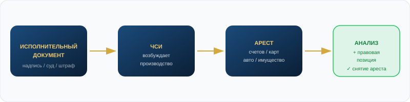
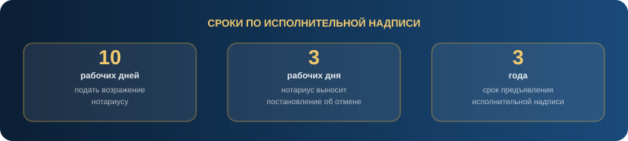
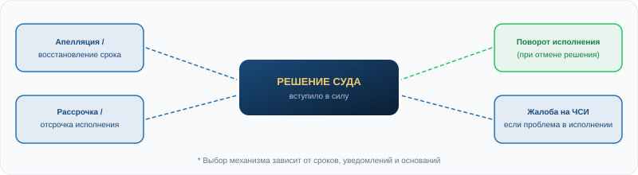

Что говорит закон о снятии арестов,
исполнительной надписи, ЧСИ и судебных решениях
Арест можно снять не обещаниями, а правильной правовой стратегией. Разбираемся, что за механизм наложил ограничение, и какой путь предусматривает закон.
Выберите тему
Каждая тема — отдельный правовой механизм. Подходы, сроки и документы у них разные.
Исполнительная надпись
Что это, когда применяется, как отменить и что происходит с арестом после отмены.
Читать →Бесспорность долга
Когда требование считается бесспорным и почему это ключевое условие исполнительной надписи.
Читать →Спорность долга
Признаки спорности, как возражение влияет на исполнительную надпись, что дальше.
Читать →Снятие ареста со счёта
Что анализировать, какие шаги предпринять, чтобы разблокировать счёт или карту.
Читать →ЧСИ наложил арест
Действия должника, когда частный судебный исполнитель заблокировал счета или имущество.
Читать →Решение суда
Апелляция, восстановление срока, рассрочка исполнения, поворот исполнения — что и когда.
Читать →Алименты и аресты
Почему алименты — отдельный механизм, что можно проверить и как работать с расчётом.
Читать →Штрафы и аресты
Административный штраф у ЧСИ: как проверить основание, сроки обжалования и оплаты.
Читать →Запрет регистрационных действий
Что делать, если нельзя продать, переоформить или зарегистрировать авто или имущество.
Читать →График платежей
Рассрочка, отсрочка, изменение порядка исполнения — как снизить нагрузку при подтверждённом долге.
Читать →Сначала определяем основание ареста
Арест счёта, карты, авто или имущества почти всегда появляется на основании исполнительного документа. Подход к снятию ареста зависит от типа этого документа.

Исполнительная надпись нотариуса
Внесудебный документ по бесспорным требованиям. Отменяется через возражение должника при наличии оснований.
Как отменить исполнительную надпись →Судебное решение
Отменяется только процессуальными способами: апелляция, восстановление срока, рассрочка. Не отменяется возражением нотариусу.
Подробнее →ЧСИ и исполнительное производство
ЧСИ исполняет документ. Жалобы на его действия — отдельный механизм. Снять арест без отмены основания нельзя.
Как снять ограничения ЧСИ →Административный штраф
Обжалуется по КоАП РК. Срок обжалования — 10 суток со дня вручения постановления. Не отменяется через нотариуса.
Подробнее →Алименты
Алиментные обязательства — отдельный правовой режим. Проверка расчёта, платежей, перерасчёт через суд при основаниях.
Подробнее →Авто, имущество, регистрационные запреты
ЧСИ ограничивает регистрационные действия. Снятие зависит от основания, суммы и статуса ИП.
Как снять запрет на авто →Исполнительная надпись нотариуса
Исполнительная надпись — внесудебный исполнительный документ, который нотариус совершает по определённым требованиям, предусмотренным законом.
Исполнительная надпись применяется только по бесспорным требованиям. Если требование спорное — нотариус не вправе её совершать, а должник вправе возразить.
Нормативная база
Закон РК «О нотариате», статьи 92-1, 92-2, 92-5, 92-8 (проверяйте по актуальной редакции на adilet.zan.kz). Правила совершения нотариальных действий нотариусами.
Когда должник вправе возразить
Если человек не согласен с суммой, основанием, процентами, пеней, комиссией, уведомлением или самим фактом долга — требование уже не выглядит бесспорным. Такая ситуация требует правового анализа.
Возражение подаётся нотариусу в течение 10 рабочих дней. Нотариус рассматривает его и не позднее 3 рабочих дней выносит постановление об отмене надписи — при наличии оснований.

Закон РК «О нотариате»
Исполнительная надпись
- Ст. 92-1 — Понятие и основания
- Ст. 92-2 — Перечень требований
- Ст. 92-5 — Возражение должника
- Ст. 92-8 — Отмена надписи
Правила совершения нотариальных действий
Порядок совершения и отмены
- Срок возражения: 10 рабочих дней
- Срок постановления нотариуса: 3 рабочих дня
- По одному долговому обязательству — одна надпись (кроме взыскания по частям)
Нужен анализ?
Разберём ваш исполнительный документ и объясним реальные варианты.
Бесспорность долга
Бесспорность — это когда документы подтверждают долг так, что между взыскателем и должником нет очевидного спора о сумме, основании и обязанности платить.
Признаки бесспорного требования:
- Есть договор, подписанный сторонами
- Есть расчёт задолженности
- Должник получил надлежащее уведомление
- Сумма понятна и не оспаривается
- Срок платежа наступил
- Требование входит в перечень для исполнительной надписи
Спорность долга
Долг может быть спорным, что требует анализа и может быть основанием для отмены надписи.
Признаки спорного требования:
- Должник не согласен с суммой или процентами
- Часть долга оплачена, но не учтена
- Не было надлежащего уведомления
- Начислены незаконные комиссии
- Есть встречные требования
- Требование не входит в перечень для надписи
Наличие возражений требует анализа. В ряде случаев это является основанием для отмены надписи и перевода спора в судебный порядок.

Не каждый арест снимается одинаково
Мы сначала определяем основание ареста. Без этого нельзя честно сказать, что именно можно снять и каким способом.
| Основание | Что можно сделать | Чего нельзя обещать |
|---|---|---|
| Исполнительная надпись нотариуса | Анализ бесспорности; возражение; отмена надписи; снятие арестов при отмене основания | 100% результат |
| Судебное решение | Апелляция; восстановление срока; рассрочка/отсрочка; поворот исполнения; жалоба на ЧСИ | Отмена через нотариуса |
| Алименты | Проверка расчёта; подтверждение оплат; оспаривание расчёта; обращение в суд при основаниях | Отмена алиментов |
| Административный штраф | Проверка постановления, сроков, оплаты; обжалование по КоАП; снятие ареста после оплаты/отмены | Отмена через нотариуса |
| Расходы ЧСИ | Проверка расчёта; оспаривание постановлений; перерасчёт при основаниях | Автоматическое списание |
Судебное решение: чем отличается от исполнительной надписи
Исполнительная надпись — нотариальный внесудебный документ. Решение суда — судебный акт. Они отменяются принципиально разными способами.
Судебное решение нельзя отменить возражением нотариусу. Для этого существуют процессуальные механизмы.
Варианты работы с судебным актом
Решение не вступило в силу
Подать апелляционную жалобу в установленный срок. Нужно анализировать дату получения решения.
Срок обжалования пропущен
Можно просить восстановить срок при наличии уважительных причин: не получал уведомление, болезнь, отсутствие.
Дело было в упрощённом письменном производстве
Ответчик может подать заявление об отмене решения, если не был надлежаще извещён. Срок — проверять по актуальному ГПК РК.
Решение уже исполняется
Рассрочка/отсрочка, обжалование действий ЧСИ, поворот исполнения при отмене решения — возможные направления.

ГПК РК
Судебное решение и его исполнение
- Апелляционное обжалование
- Восстановление пропущенных сроков
- Упрощённое письменное производство
- Рассрочка / отсрочка исполнения
- Поворот исполнения решения
Нормативная база
Мы работаем строго в рамках законодательства РК. Рекомендуем проверять актуальность статей на adilet.zan.kz.
Закон РК «О нотариате»
Исполнительная надпись, бесспорные требования, возражение должника, отмена надписи.
Правила совершения нотариальных действий
Порядок совершения надписи, возражения, сроки (10 р.д. и 3 р.д.), одна надпись по одному обязательству.
Закон РК «Об исполнительном производстве»
Исполнительный документ, меры исполнения, арест счетов и имущества, права сторон, расходы ЧСИ, жалобы на действия.
ГПК РК
Судебное решение, апелляция, восстановление срока, упрощённое производство, рассрочка исполнения, поворот исполнения.
КоАП РК
Административные штрафы, порядок обжалования постановления, срок 10 суток. Штрафы не отменяются через нотариуса.
Кодекс «О браке и семье» РК
Алиментные обязательства, расчёт задолженности, изменение размера через суд. Алименты не отменяются возражением нотариусу.
FAQ — 30 вопросов по законам Казахстана
Это внесудебный исполнительный документ, который нотариус совершает по бесспорным требованиям, прямо предусмотренным законом. На его основании ЧСИ может возбудить исполнительное производство и наложить арест.
Исполнительная надпись — ускоренный механизм взыскания без суда. Он применяется только тогда, когда факт и размер долга очевидны и не вызывают спора. Если спор есть — взыскатель обязан идти в суд.
Спорность — это наличие обоснованных возражений должника по сумме, основанию, процентам, уведомлению или иным существенным условиям требования. Наличие спора требует анализа. Читать подробнее о спорности →
Несогласие с суммой может быть основанием для возражения. Но само по себе несогласие не гарантирует автоматическую отмену — нужен анализ документов, расчётов и оснований. Отправьте документы на разбор →
По Правилам совершения нотариальных действий — в течение 10 рабочих дней с момента получения уведомления о совершённой надписи. Важно не пропустить этот срок.
Не позднее 3 рабочих дней после получения возражения нотариус выносит постановление. При наличии оснований — об отмене. Если оснований нет — в отмене может быть отказано.
После отмены нужно получить постановление нотариуса и направить его ЧСИ. ЧСИ должен принять меры к прекращению соответствующих исполнительных действий и снятию арестов. Важно проверить, нет ли других ИП по иным основаниям.
Если отменён исполнительный документ — основание для ИП отпадает. ЧСИ должен принять меры. Но если есть другие ИП — арест по ним может сохраняться. Нужна полная проверка ИП по ИИН. Проверить по ИИН →
По правилам — по одному долговому обязательству совершается одна исполнительная надпись, кроме случаев взыскания по частям. Если спорность сохраняется, взыскатель вправе обратиться в суд — это уже другой процесс, с возможностью должника предоставить возражения и доказательства.
Исполнительная надпись — механизм для бесспорных требований. Если спор сохраняется, правовой путь взыскателя — судебный порядок, где должник имеет право представить все свои возражения, документы и доказательства.
Надпись — нотариальный внесудебный документ, отменяемый через возражение. Решение суда — судебный акт, который изменяется/отменяется только процессуальными средствами: апелляция, восстановление срока, рассрочка.
В ряде случаев — да. Через апелляцию (если срок не пропущен), через восстановление срока, через отмену в упрощённом производстве (если не был надлежаще извещён). Перспектива зависит от сроков, уведомлений и доказательств. Подробнее о решениях суда →
Нужно подать ходатайство о восстановлении срока с указанием уважительных причин: не получал уведомление, не знал о процессе, болезнь, длительное отсутствие. Суд оценивает причины и при их обоснованности восстанавливает срок.
Если дело рассматривалось в упрощённом письменном производстве и вы не были надлежаще извещены — есть основания для отмены решения. Срок для подачи заявления — проверяйте по актуальному ГПК РК. Напишите нам на разбор →
Порядок рассмотрения дел без судебного заседания, на основании письменных доказательств. Ответчик может не узнать о процессе, если не получил уведомление. ГПК РК предусматривает механизм отмены такого решения при надлежащем обосновании.
Да. ГПК РК предусматривает возможность суда предоставить рассрочку или отсрочку исполнения решения с учётом имущественного положения и других уважительных обстоятельств. Нужно подготовить позицию и документы. Подробнее о графике платежей →
Если решение суда отменено, а деньги с должника уже были удержаны — возникает вопрос об их возврате. ГПК РК содержит нормы о повороте исполнения решения суда — отдельная процедура возврата исполненного по отменённому акту.
Нет. Алименты — отдельный правовой режим. Возражение нотариусу не применяется для снятия алиментных обязательств. Здесь другой путь: проверка расчёта, подтверждение платежей, изменение размера через суд при основаниях. Читать об алиментах →
Можно проверить расчёт задолженности, подтвердить ранее сделанные платежи, оспорить неправильный расчёт у ЧСИ, обращаться в суд при изменении обстоятельств. Мы анализируем расчёт, платежи, документы и действия ЧСИ.
Нет. Административный штраф — это не нотариальная исполнительная надпись. Штраф обжалуется по правилам КоАП РК в течение 10 суток со дня вручения/получения постановления. Нотариальный механизм здесь не применяется.
По КоАП РК постановление обжалуется в течение 10 суток со дня вручения. Жалоба подаётся вышестоящему органу или в суд. Если срок пропущен — нужны основания для его восстановления. Подробнее о штрафах →
Нужно проверить постановление об административном правонарушении, дату, сумму, был ли штраф уже оплачен, и корректно ли возбуждено ИП. Арест снимается после оплаты или при отмене основания.
В ряде случаев расходы ЧСИ можно оспорить или снизить при наличии правовых оснований: завышены, начислены с нарушением, не подтверждены фактическими действиями, основание взыскания отменено.
Нужно установить основание запрета, проверить ИП, сумму, исполнительный документ. Снятие возможно при отмене основания, погашении долга или через суд при обоснованных требованиях. Подробнее о запретах →
Аналогично: устанавливаем основание, проверяем ИП и документы, оцениваем соразмерность ограничения. При отмене основания или погашении долга — направляем документы ЧСИ для прекращения мер.
Нет. Мы работаем удалённо по всему Казахстану. Документы и общение через WhatsApp или email. Физическое присутствие не требуется.
ИИН, номер ИП (если есть), исполнительный документ (надпись, решение, постановление), расчёт задолженности, договор или основание долга, платёжные документы при наличии. Чем больше — тем точнее анализ. Отправить документы на разбор →
Потому что результат зависит от конкретного основания, документов, сроков и обстоятельств. Мы даём честный анализ — что реально сделать в вашей ситуации, а не обещания для привлечения клиента.
Нужно разобрать каждое ИП отдельно: основание, документ, сумму, взыскателя, ЧСИ. После отмены одного ИП арест может сохраняться по другим. Поэтому мы сначала делаем полный разбор. Проверить все ИП по ИИН →
Да. Мы работаем дистанционно по всем городам Казахстана — Алматы, Астана, Шымкент и другие регионы. Звоните, пишите в WhatsApp или оставьте заявку.
Мы не обещаем результат, если: нет оснований для оспаривания; долг подтверждён судом и сроки пропущены без уважительных причин; алименты законно начислены и расчёт верный; штраф законный и срок обжалования пропущен; клиент скрывает документы или платежи. Это повышает доверие — мы честно говорим о реальных перспективах.
Не знаете, какой у вас тип долга?
Проверьте по ИИН или отправьте документы на разбор. Объясним, какой механизм применяется и что реально можно сделать.